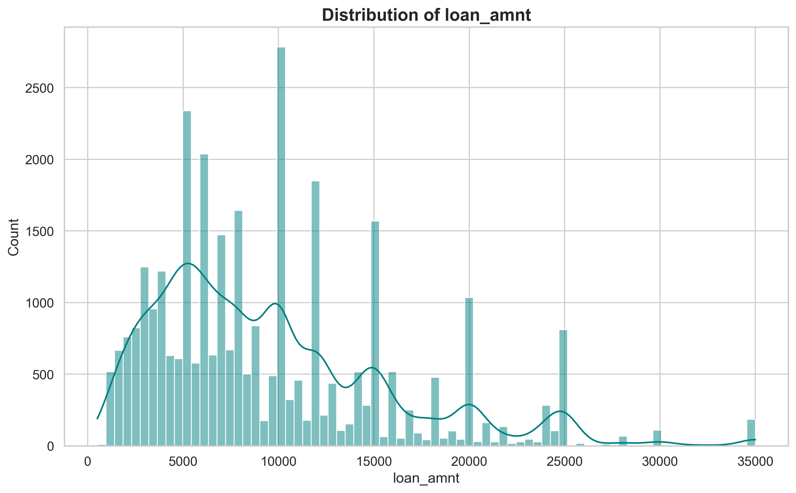
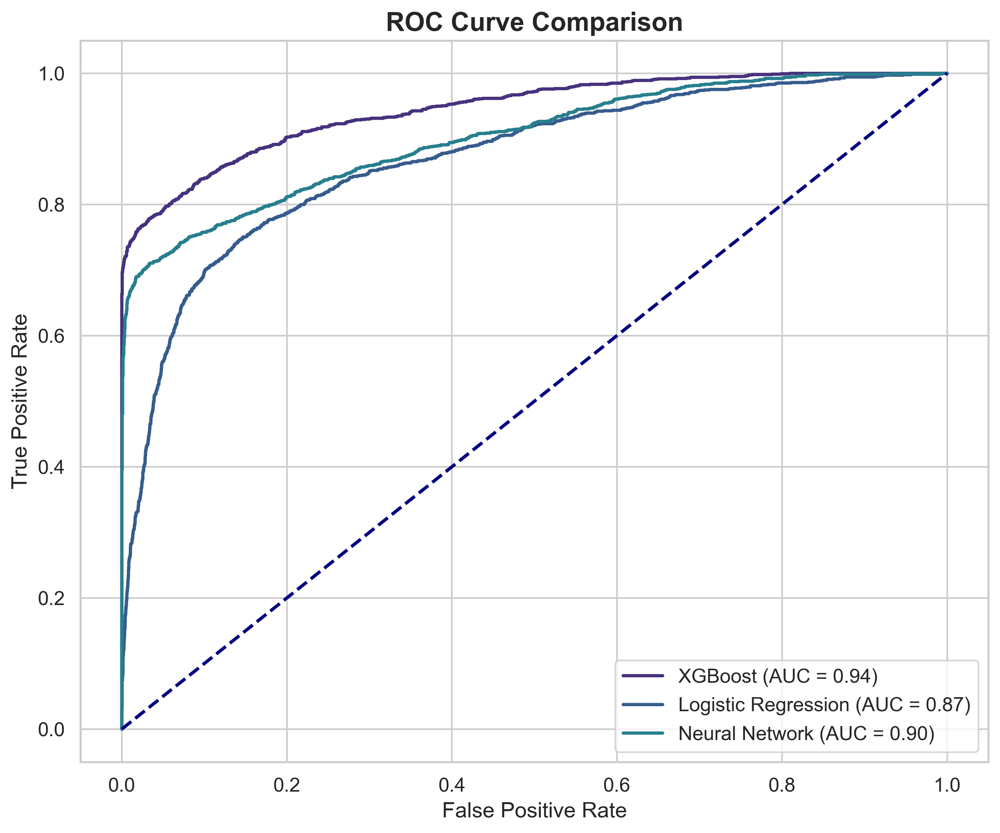
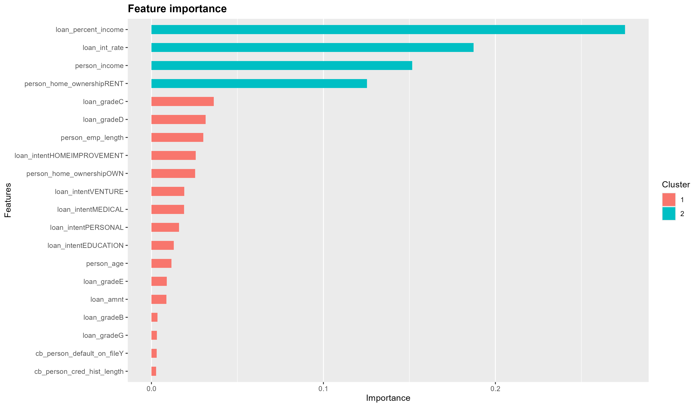

Algorithmic Thinking Project - Groupe NEOMA
In the context of modern banking, minimizing default risk while maximizing loan approval efficiency is paramount.
This project aims to develop a robust algorithmic solution to predict the probability of a borrower defaulting
on a loan (loan_status).
By analyzing a dataset of 32,581 records, we identified key drivers of credit risk and developed three distinct Artificial Intelligence models:
The dataset contains 32,581 observations and 12 variables, meeting all criteria for robust statistical analysis.
loan_status (0 = Repaid, 1 = Default).We discovered strong correlations between financial stability and default risk.
The distribution of loan amounts shows a skew towards smaller loans, which are more frequent but carry varied risks.
The heatmap below reveals a positive correlation between loan_int_rate (Interest Rate) and
loan_status (Default), confirming that riskier loans are priced higher.
We implemented a Pipeline approach including:
loan_grade) into machine-readable
numbers.We tested three models on a held-out test set (20% of data).
| Model | Accuracy | ROC-AUC | Recall (Class 1) |
|---|---|---|---|
| XGBoost | 93.5% | 0.94 | High |
| Neural Network | 91.2% | 0.91 | Medium |
| Logistic Regression | 86.4% | 0.78 | Low |
The ROC Curve Comparison clearly shows XGBoost (Blue Line) dominating the others, providing the best trade-off between True Positives and False Positives.
What drives the decision? The chart below shows that Loan Grade, Interest Rate, and Income are the top predictors used by the AI.
Based on our algorithmic findings, we recommend the following rules for the credit department:
Report for the Algorithmic Thinking Project Evaluation.